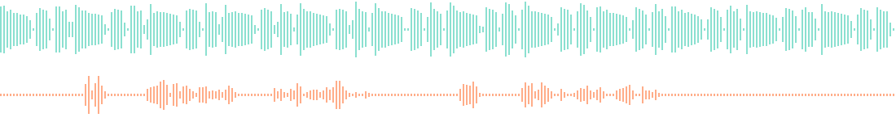

片場 · 送到喇叭
High Cut ＝ Low-pass／低通
播放用音樂 → 低通 → 現場喇叭 → 演員
衰減高於截止頻率的聲音，讓演員跟著低音和大鼓律動。人聲與吉他的提示會變弱，對嘴或需要音高時，可先全頻排練，再試耳內提示或分段拍攝。
片場實驗 / PLAYBACK ENGINEERING
兩個人在海邊聽樂團，肩膀跟著鼓點晃，嘴裡還在說話。演員要聽到多少音樂，現場才收得到這句台詞？
這次在元宇宙教室重現《藍色大門》的片段。背牆播放海浪畫面，Playback Engineer 負責搖滾樂的拍點、起播位置，以及每一個 take 的重現。
看課堂拍攝流程PLAYBACK DESK

聽現場麥克風。吉他、鈸和鼓都從喇叭漏進來，留意「鼓聲好清楚喔」的字尾。
B 可調片場 High Cut，C、D 可再調後期 Low Cut。切換時維持同一拍。手機聽低頻建議戴耳機。
每 15 秒切換一次，0:00 為 全頻現場、0:15 低頻現場、0:30 清理對白、0:45 成片。原創節奏、合成海浪與 AI 示範對白。
甲「你聽，海浪退下去的時候，鼓聲好清楚喔。」
乙「有啊。我們再等四拍，然後一起走。」
訊號路徑
片場 · 送到喇叭
播放用音樂 → 低通 → 現場喇叭 → 演員
衰減高於截止頻率的聲音，讓演員跟著低音和大鼓律動。人聲與吉他的提示會變弱，對嘴或需要音高時，可先全頻排練，再試耳內提示或分段拍攝。
後期 · 處理錄回的聲音
對白＋漏音 → 高通 → 對白軌 ＋ 原曲
逐步衰減低頻漏音，聽鼓點是否退下、演員的聲音是否變薄。再用獨立的全頻原曲對拍，海浪另鋪一軌，三者各自推音量。
試聽觀察 這個模擬從 100 Hz 低通、125 Hz 高通、兩者各 24 dB/oct 開始。切到 C，先把 Low Cut 拉高，再慢慢降回來。台詞的厚度在哪裡回來？教室喇叭的反射、諧波和人聲頻段會重疊，現場仍要錄一段比較。
元宇宙教室 · 拍攝實作
Playback Engineer 和導演確認歌曲版本、起始小節與預備拍，排好主歌／副歌標記，負責起播、停播和重來。錄音組 監聽漏音並記錄 take。演員 先排肩膀的拍點，再把台詞放回動作裡。攝影組每次保留相同的對拍依據。
保留一份全頻原曲供後期。選好進歌點，設四拍預備，每一 take 從同一標記起播。唱 MV 時先讓演員熟悉原唱的呼吸與嘴形。用場記板及參考軌記下同步點，有時間碼設備時可一起使用。
A 全頻做對照。B 低頻把 high cut 加在喇叭播放線，麥克風照常收兩人的台詞。再補一 take 關掉音樂收乾淨台詞，另收教室底噪。記下三次的曲段、音量、濾波與走位。
喇叭靠近需要拍點的人、遠離收音軸。讓 Boom 靠近正在說話的演員。先問演員跟不跟得上，再請錄音組聽字尾。小喇叭播不出低頻時，可改用簡單低音鼓提示或耳內提示。
對照預備拍、參考音或場記板，把原曲對回動作。複製 B 的現場軌，在副本試 low cut 並來回旁通。交付原曲版本、cue 起點、take 編號、兩人的原始對白和環境音。
Week 12 · 原課影片
Deity Microphones 訪問 Fletcher Alliston。看片時找找他怎麼選曲段，以及舞廳裡的演員怎麼在錄對白時維持節奏。
Deity Microphones · How To Do Music Video Playback
訪談提到 thump track，用另一條低頻脈衝跟住原曲的節奏。課堂也可以先把原曲低通，兩種提示帶都聽一次，請演員說哪一種更容易抓拍。
回看片段